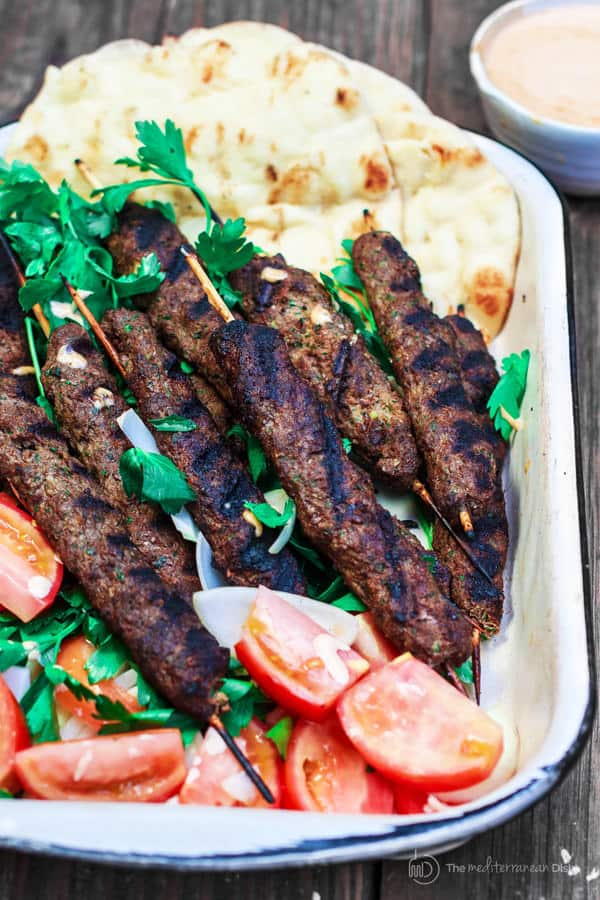

Back

Throughout the Middle East, just about every country and region have their own version of Kofta with varying ingredients. It may be called kefta, kifta, kafta, kofta, koobideh, or a myriad of other names.
While traditionally they are served more as meatballs, they are often spread out over a skewer and cooked over the open flame.
Kofta is ground meat that is mixed with assorted spices, seasonings, onions, garlic, and parsley, or mint, and is then cooked until browned and cooked throughout.
- Ground Beef
- Ground lamb
- Onions
- Garlic
- Parsley
- Sumac
- Allspice
- Cardamom
- In a large bowl mix together the ground meat, onions, garlic, parsley, mint, sumac, allspice, cinnamon, cardamom, cumin, paprika, salt, and pepper, until combined and then refrigerate.
- Form a large ball from the meat mixture and then shape it more into an oval and skewer it.
- Press the meat to cover the extent of the skewer and set aside.
- Cook on a hot grill (450° to 550° F) or on a griddle over medium-high heat for 3-4 minutes per side or until browned and cooked throughout and serve.